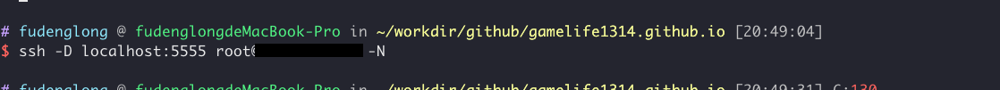
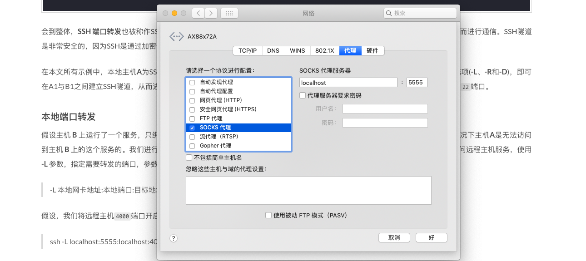

从前我以为 SSH 只是为了登录到远程服务器，没想到它的端口转发这么强大，简直惊呆了我自己，首先我从今天遇到的问题先说起吧。我们服务器上跑了个数据库，当然它只配置了localhost访问，为了在不改变其他配置（新增用户，允许白名单域名访问）的情况下能访问数据库，该怎么办？答案是使用SSH 端口转发
例如，我的数据库运行在服务器：xinhuxx.com 上，那么现在本地建立端口转发：
ssh root@xinhuxx.com -L 53306:127.0.0.1:3306 -N -f
然后使用客户端连接数据库：
mycli -h 127.0.0.1 -P 53306 -u root -p root app

SSH 端口转发也被称作SSH隧道，因为它们都是通过SSH登录之后，在SSH客户端与SSH服务端之间建立了一个隧道，从而进行通信。SSH隧道是非常安全的，因为SSH是通过加密传输数据的(SSH全称为Secure Shell)。
在本文所有示例中，本地主机A为SSH客户端，远程云主机B为SSH服务端。从A1主机通过SSH登陆B1主机，指定不同的端口转发选项(-L、-R和 -D)，即可在A1与B1之间建立SSH隧道，从而进行不同的端口转发。在以下的示例中我们都假定B的ip为：112.115.9.23，它的防火墙只开放了22端口。
本地端口转发
假设主机 B 上运行了一个服务，只绑定了 127.0.0.1，端口号为：4000，现在本地主机A需要访问这个服务，在没有端口转发的情况下主机A是无法访问到主机 B 上的这个服务的。我们进行端口转发，将发送到本地端口的请求，转发到目标端口，这样就可以通过访问本地端口进而访问远程主机服务，使用 -L 参数，指定需要转发的端口，参数规则是这样的：
-L 本地网卡地址:本地端口:目标地址:目标端口
其中本地网卡地址是可以省略的，默认为：127.0.0.1, 假设，我们将远程主机4000端口开启的服务绑定在本地5555端口上：
ssh -L localhost:5555:localhost:4000 root@112.115.9.23 -N
这样我们就可以像在主机 B 上一样访问这个服务了。这里的 -N 参数意思是：不执行命令，仅仅是为了端口转发。
远程端口转发
A 和 B 的角色换一下，我们现在在A上运行一个服务 127.0.0.1:4000, 现在远程主机 B 需要访问这个服务，需要进行远程端口转发，将发送到远程端口的请求，转发到目标端口，这样，就可以通过访问远程端口，来访问目标端口的服务。使用 -R 参数可以达到这个效果，参数形式是这样的：
-R 远程网卡地址:远程端口:目标地址:目标端口
假设，将远程主机的5555端口转发到本地的 4000 端口
ssh -R localhost:5555:localhost:4000 root@112.115.9.23 -N
这样就可以在远程主机B上通过 localhost:5555 来访问我们本地的 4000 端口开启的的服务了。
动态端口转发
对于本地端口转发和远程端口转发，都存在两个一一对应的端口，分别位于SSH的客户端和服务端，而动态端口转发则只是绑定了一个本地端口，而目标地址:目标端口则是不固定的。目标地址:目标端口是由发起的请求决定的，比如，请求地址为192.168.1.100:3000，则通过SSH转发的请求地址也是192.168.1.100:3000。动态转发的参数形式这样的：
-D 本地网卡地址:本地端口
这时，通过动态端口转发，可以将在本地主机A发起的请求，转发到远程主机B，而由B去真正地发起请求。
ssh -D localhost:5555 root@112.115.9.23 -N
而在本地发起的请求，需要由Socket代理(Socket Proxy)转发到SSH绑定的5555端口。以 Mac 系统为例：


这样则在系统上，所有请求都会转发到 5555 端口，然后通过SSH构建的隧道进行转发，如果主机B能够访问外网的话，则可以实现科学上网。。。。
链式端口转发
假设有这样三台机器你：A（你家的），B（公司的），C（云主机），满足这几个条件：
A，B不在同一网段，B没有公网IP，无法被直接访问到；A，B都可以远程登录到C；C的IP为：112.115.9.23
现在有这么个情况，你应该很熟悉的，B（公司）主机上运行了一个服务 :3000，需要在A（家）中同样以:3000访问，可以这样做：
首先将C（云主机）的某个空闲端口，假如 5555 转发到 B（公司）的 3000 端口，在 B（公司）主机上这么操作：
ssh -R 5555:localhost:3000 root@112.115.9.23
然后，在A（家）中的主机上将本地的3000端口转发到C（云主机）的 5555 端口，在 A（家）主机上这么操作：
ssh -L 3000:localhost:5555 root@112.115.9.23
这两步完成之后，你就可以在家里访问公司电脑上运行的服务了。